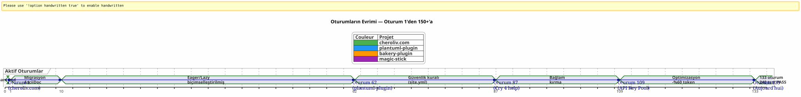
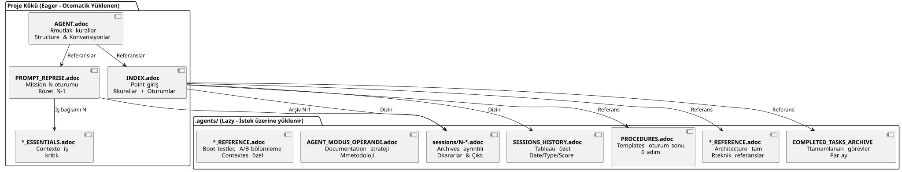
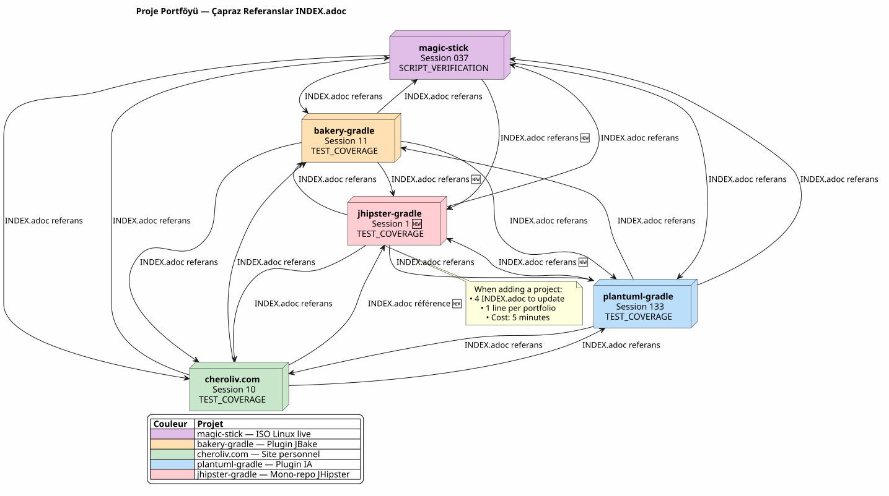
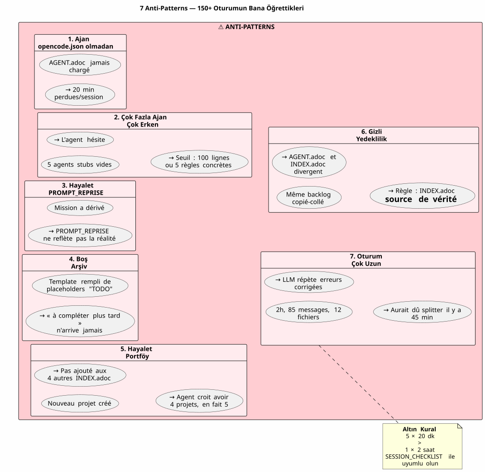

Bir Yapay Zeka Ajanını AsciiDoc ile Yönetmek: Bağlam Sızıntısı Olmayan Opencode Oturumları için Eager/Lazy Stratejim
Yayınlandı: 24 April 2026
Özet
Opencode gibi bir yapay zeka ajanıyla birden fazla oturum boyunca karmaşık projeler üzerinde çalışırken temel bir sorunla karşılaşırız:bağlam sızıntısı. Ajan önceki oturumu hatırlamıyor. Ona açıklanan her şey — mimari, konvansiyonlar, backlog durumu — kayboluyor. Bu bağlamı her oturumda yeniden oluşturmak maliyetli, yavaş ve hata kaynağı.
Bu makale, bu sorunu çözmek için oluşturduğum zanaatkâr stratejiyi ortaya koyuyor: AsciiDoc dosyalarına dayalı kalıcı bir yönetişim sistemi, bir dikotomiyleİstekli/Tembelbağlam belirteci tüketimini optimize etmek için, ve birkaçınılmaz oturum sonu prosedürüsürekliliği sağlamak için.
Sahne: 21 Nisan Pazartesi, 09.00
Opencode’u Gradle eklentime devam etmek için yeniden açıyorum.plantuml-plugin. Dün akşam, API anahtarları havuzu mimarisi ajanıyla üç saat konuştum — round-robin rotasyonu, kota yönetimi, otomatik geri dönüş. Bu sabah, ajan bana japon balığı gözleriyle bakıyor.
_ — Merhaba, ben Opencode asistanınızım. Bugün size nasıl yardımcı olabilirim? _
Hayır — Ah evet, API anahtarı havuzu, YAML yapısındaydık. Hayır — Dikkat,PlantumlManager`bir Kotlin singleton nesnesidir, bir sınıf değil. Hayır — Hayır, dün şuna karar verdik ki`SyntaxValidationResult`içinde nested bir sealed class kalıyordu`PlantumlService.
Her şey baştan yapılmalı. Daha doğrusu: her şey baştan açıklanmalı. Oturumumun ilk yirmi dakikasını, ajanın dün zaten elinde bulundurduğu bir bağlamı yeniden oluşturmakla geçireceğim. Yirmi dakika token yakıldı. Kod yazabilecekken zorunlu öğreticilik yaptığım yirmi dakika.
Bu bir Opencode hatası değil. Bu, konuşmalı LLM’lerin doğasının ta kendisidir: iki oturum arasında çalışma belleğitamamen silinmiş. Ajan önceki görevi, alınan kararları, belirlenen tuzakları ve birlikte yazdığımız kodu hatırlamıyor.
Bunu düzinelerce kez yaşadım. Aynı anda dört projede. Haftalar boyunca birbirini takip eden oturumlarla. Hesapladım: ortalama olarak,Oturum süresinin %30 ila %40’ıAjanı yeniden bağlamsallaştırmaya adanmıştı. Projenin 87. oturumunda`plantuml-plugin`, dayanamadım. Artık onuncu kez şunu yeniden açıklamayı göze alamazdım ki`AttemptEntry`içinde üst düzey bir veri sınıfıdır`DiagramProcessor.kt`.
Bir sisteme ihtiyacım vardı. Hack değil. Gerçek bir yönetişim.
Yaratılış: Kaostan Yönteme
İlk Oturumlar: Karanlık Çağ
Opencode ile ilk projem,plantuml-plugin, hiçbir yönetişim olmadan başladı. Bir soru soruyorum, ajan yanıtlıyor, iterasyon yapıyoruz, oturum sona eriyor ve ertesi gün sıfırdan başlıyoruz. 1. oturumdu, sonra 2., sonra 3… ta ki 62. oturuma kadar; o noktada aynı mimariyi yeniden açıklamak için toplamda saatler kaybettiğimi fark ediyorum.
-
oturumda rakamlar ortada:198 birim testi geçiyor, 42 fonksiyonel test doğrulandı, eklenti çalışıyor. Ancak bilişsel maliyet katlanılmaz. Her yeni oturum, projenin yapısı hakkında yirmi dakikalık bir monologla başlıyor.
site.yml’in Yok Edildiği Bölüm (Oturum 2, bakery-plugin)
Yöntem de bir felaketten doğar. Proje üzerine`bakery-gradle`, 2. oturumda, ajandan dosyayı değiştirmesini istiyorum`site.yml`. Ajan, dosyanın sürümlenip sürümlenmediğini kontrol etmeden bir`Write`içeriğin üzerine yazan tam. Sonuç: gerçek token’lar (Firebase API anahtarları, dağıtım sırları) sahte yer tutucularla değiştirilir. Dosya git’te değildi — … içindeydi`.gitignore`sırları korumak için.
Yedekleme olmadan. Olmadan`git restore`mümkün. Takıldım. Yapılandırma dosyasını manuel olarak yeniden oluşturmam, token’ları parola yöneticilerimde bulmam ve her şeyi yeniden birleştirmem gerekiyor.
İşte bu hayal kırıklığından doğarMutlak Kural 1b:
_ ASLA üzerine yazmabir config dosyası ile bir`Write`bir … olduğunda tam`Edit`Bir vize yeterlidir.ASLA değiştirmeyinhassas değerleri sahte değerlerlegit check-ignore` ve git ls-files komutlarını kontrol etherhangi bir değişiklikten önce. _
Bugün tüm dosyalarımın mermerine kazınmış olan bu kural,AGENT.adoc et `INDEX.adoc`dört proje üzerinde, bana bir saatlik manuel çalışmaya mal olan gerçek bir hatadan doğdu.
Markdown → AsciiDoc Geçişi (Oturum 1, cheroliv.com)
25 Nisan 2026’da, üzerinde`cheroliv.com`, radikal bir karar alıyorum: yönetişimin tamamını Markdown’dan AsciiDoc’a dönüştürmek. Bu estetik değil. Bu işlevsel. AsciiDoc, LLM’lerin daha iyi okuduğu anlamsal bir yapı sunar: hiyerarşik bölümler, tipli tablolar, uyarılar (NOTE, WARNING, CAUTION), makine tarafından okunabilir belge öznitelikleri.
-
oturumun`cheroliv.com`yapıyı biçimselleştir:
-
Dönüştürme`AGENTS.md` en
AGENT.adoc -
Uzman ajanların oluşturulması:`CODER.adoc`,
SCRUM_MASTER.adoc,PLANTUML_DESIGNER.adoc -
Eager/Lazy yapısının oluşturulması:`INDEX.adoc`,
SESSIONS_HISTORY.adoc,AGENT_SESSION_MANAGER.adoc,SESSION_CHECKLIST.adoc,PROCEDURES.adoc
-
Tek bir commit:`90975e9 refactor: migrate agent governance from Markdown to AsciiDoc`. Ve site çalışmaya devam ediyor.

Yukarıdaki zaman çizelgesi gerçek ilerlemeyi gösterir. Dönüm noktası 87. oturumdur: tekrarlanan yeniden bağlamlandırmanın yarattığı hayal kırıklığının tolerans eşiğini aştığı ve Eager/Lazy yönteminin bir fikir olmaktan çıkıp bir zorunluluk hâline geldiği yer burasıdır.
Strateji: Eager/Lazy Derinlemesine
Felsefe: Bilişe Uygulanan Bilgisayar Önbelleği
Yaklaşımım doğrudan bilgisayar önbelleği yönetiminden ilham alıyor. Olan her şeyeleştirel ve sıklıkla kullanılanhemen erişilebilir olmalıdır (Hevesli). Olan her şeybağlamsal veya hacimlitalep üzerine yüklenmelidir (Tembel).
Eager (Gösterge Paneli) |
Lazy (Sahibinin El Kitabı) |
Beden |
< 100 satır, < 10k token |
Sınırsız, ayrıntılı |
Yükleniyor |
Otomatik, oturum başında |
Ajanın talebi üzerine |
İçerik |
Mutlak kurallar, mevcut görev, kritik durum |
Oturum arşivleri, tam geçmiş, ayrıntılı prosedürler, teknik referanslar |
Rol |
Ajanı derhal yönlendirin |
Derin bağlam sorularını yanıtlayın |
Eager Dosyaları: Kontrol Paneli
Bu dosyalar her projenin kökünde bulunur ve ajan tarafından her oturumun başında otomatik olarak yüklenir. Bunlar … oluşturur.gösterge paneli-- kritik bilgi, anında erişilebilir.

AGENT.adoc-- Ana dosya. Üzerinde`cheroliv.com`, 200 satır uzunluğunda ve şunları içeriyor:
-
Projenin mutlak kuralları (izin olmadan commit yok,`rm`onay olmadan)
-
Proje yapısı ve kod kuralları
-
Temel komutlar (
./gradlew serve,./gradlew test) -
Epikler ve ürün backlog’u (önceliklendirilmiş kullanıcı hikâyeleri)
-
Kesişen kalite kriterleri (erişilebilirlik, responsive, uyumluluk)
Üzerinde`bakery-plugin`, Kural 0 farklıdır:./gradlew -q publishToMavenLocal` kaynak kodunda her değişiklikten sonra zorunludur.. Çünkü yerel JAR’ı yeniden yayımlamadan eklentiyi test etmek, henüz paketlenmemiş bir kodda hata ayıklamak için bir saatimi kaybetmeme neden oldu.
PROMPT_REPRISE.adoc-- Mevcut oturumun görevi. Her oturum sonunda güncellenir, şunları içerir:
-
Oturum numarası ve öncelikli görev
-
Önceki oturumun özeti (yapılanlar, yapılacaklar)
-
Mevcut oturumun kabul kriterleri
-
Spesifik teknik hatırlatmalar
.agents/INDEX.adoc-- Giriş noktası. Mutlak kuralları, son oturumları ve özellikle deproje portföyüaynı metodolojiyle yönetilen. Bugüne kadar burada beş proje yer alıyor:
----
| magic-stick | Session 23 | SCRIPT_VERIFICATION.adoc | 2026-04-27 |
| bakery-gradle | Session 11 | TEST_COVERAGE_ANALYSIS | 2026-04-27 |
| cheroliv.com | Session 9 | TEST_COVERAGE_ANALYSIS | 2026-04-27 |
| plantuml-gradle| Session 133| TEST_COVERAGE_ANALYSIS | 2026-04-23 |
| jhipster-gradle-plugins | Session 1 | TEST_COVERAGE_ANALYSIS | 2026-04-28 |
----
**`*_ESSENTIALS.adoc`** -- Eager bağlamını daha da optimize etmek için yakın zamanda yapılan bir ekleme (Oturum 109, plantuml-plugin). API anahtarı havuzuna 200 satır iş bağlamı yüklemek yerine, temel kısımdan 50 satır yüklüyorum ve diğer 150 satır LAZY olarak içinde kalıyor`*_REFERENCE.adoc`.
Ölçülen sonuç: geçiş**~25k token EAGER'dan ~10k token'a**(%60 kazanç). Ajan artık enerji tüketen hatırlatıcılara ihtiyaç duymuyor.
==== Kayıp Halka: `opencode.json
Size, belgelemeyi neredeyse unuttuğum bir şeyi itiraf etmeliyim. Tüm bu .adoc dosyalarının üstünde, onsuz hiçbir şeyin çalışmadığı minik bir JSON dosyası var. Adı`opencode.json`ve altı satır ediyor. Kelimenin tam anlamıyla altı satır.
[source,json]
----
{
"$schema": "https://opencode.ai/config.json",
"instructions": [
"AGENT.adoc"
]
}
----
Opencode'a şunu söyleyen dosya bu: « Başlangıçta, yükle`AGENT.adoc`otomatik olarak. » Onsuz, ajan tam olarak makalenin başında anlattığım gibi boş bir sayfadır. Onunla birlikte, ajan ben daha merhaba demeden mutlak kuralları, projenin mimarisini ve temel komutları elinde bulundurur.
Bu dosyanın önemini tesadüfen keşfettim. Üzerinde`bakery-plugin`, yoktu. Ajanın bu projede neden diğerlerine göre sistematik olarak daha « kayıp » olduğunu merak ediyordum. Mutlak kurallar gerçekten de içindeydi`AGENT.adoc`— ama`AGENT.adoc`hiç yüklenmezdi. Ajan her oturumda yalnızca ona manuel olarak okumasını söylediğim şeyleri okurdu. Bu, 11. oturumuydu`bakery-plugin`… yokluğunu fark ettiğimde`opencode.json`. Onu ben oluşturdum — ve 12. oturum diğerleri gibi başladı.
Bu dosya artık benim için o kadar apaçık ki onu artık düşünmüyordum bile. Aracını fazla iyi bilen bir geliştiricinin klasik hatası. Bugün ise onu sistematik olarak *önce* oluşturuyorum`AGENT.adoc`. Bu ilk taştır.
==== INDEX.adoc`'un İkiliği
Açıklığa kavuşturulmayı hak eden bir başka incelik:`INDEX.adoc`içinde yaşar`.agents/`— LAZY olarak sunduğum bir dosya. Ancak onu tüm tablolarımda EAGER olarak listeliyorum. Burada görünür bir gerilim var.
Saha gerçeği: dosyalar`.agents/INDEX.adoc`oturum başında otomatik olarak yüklenir, tıpkı`AGENT.adoc` et `PROMPT_REPRISE.adoc`. Onlar içinde`.agents/`düzenleme nedenleriyle — kök dizini işgal etmemek için — ancak davranışları EAGER.
Üzerinde`plantuml-plugin`, `INDEX.adoc`200 satır tutar ve mutlak kuralların *tamamını* tarihçeleriyle (geçmiş oturumların dersleri), skorlarıyla EPIC'leri ve proje portföyünü içerir. Ajanın «nerede olduğumuzu» bilmek için başvurduğu belge budur. Üzerinde`bakery-plugin`, yol haritası ve son oturumlarla birlikte 150 satır ediyor.
arasındaki kasıtlı yedeklilik`AGENT.adoc` et `INDEX.adoc`şaşırtabilir. Mutlak kurallar her ikisinde de mevcuttur. Neden? Çünkü iki farklı rolü yerine getirirler: içinde`AGENT.adoc`, bunlar *açıklayıcıdır* (kuralın hikâyesi, öğrenilen ders); içinde`INDEX.adoc`, bunlar *yürütücüdür* (çıplak kural, gerekçesiz, hızlı bir danışma için). Ajan okur`AGENT.adoc`bir kez *anlamak* için; yeniden okuyor`INDEX.adoc`her oturumda *uygulamak* için. İki kullanım, iki format.
[plantuml, format=svg, id=diag-dualite-agent-index, alt="Comparaison entre AGENT.adoc (narratif) et INDEX.adoc (exécutif)"]
----
@startuml
skinparam backgroundColor #FEFEFE
skinparam defaultTextAlignment center
title İkilik AGENT.adoc ←→ INDEX.adoc
left to right direction
rectangle "AGENT.adoc\n(Racine — EAGER)" as AGENT #E3F2FD {
rectangle "📖 **Anlatı Formatı**\nLe kuralın hikâyeleştirilmesi\nöğrenilen ders, bağlam" as NARR
rectangle "🏗️ **Tam Mimari**\nStructure proje, bileşenler\nBacklog ayrıntılı US" as ARCHI
rectangle "📋 **Açıklayıcı Kurallar**\nPourquoi kural mevcut\nHistorique olayın" as EXPL
}
rectangle "INDEX.adoc\n(.agents/ — EAGER)" as INDEX #E8F5E9 {
rectangle "⚡ **Yürütme Formatı**\nLa çıplak kural, gerekçesiz\nConsultation hızlı" as EXEC
rectangle "📊 **Yol Haritası & EPICs**\nTableau özet\nProgression, Skor, Öncelik" as ROAD
rectangle "🌐 **Proje Portföyü**\nVue yatay\n5 senkronize proje" as PORT
}
AGENT --> INDEX : "Ajan AGENT.adoc okur\n**anlamak** için 1 kez"
INDEX --> AGENT : "Ajan INDEX.adoc yeniden okur\nher oturumda **uygulamak** için"
note bottom of AGENT
Maksimum boyut: 200 satır
end note
note bottom of INDEX
Maksimum boyut: 200 satır
Source de vérité en cas de divergence
end note
@enduml
----
Bu bilinçli yedeklilik bir tasarım tercihidir. Yaklaşık 50 satır ek EAGER token'ı tüketir — ancak ajanın kuralları her zaman gözünün önünde tutmasını sağlar; buna anında itaati kolaylaştıran kısa biçim de dahildir.
=== LAZY Dosyaları: Sahibinin El Kitabı
Bu dosyalar şurada bulunur:`.agents/`ve yalnızca ajanın ihtiyaç duyduğunda okunurlar. Yöntemin gerçek zenginliğini oluştururlar, çünkü proje bilgisini mevcut bağlamı kirletmeden biriktirirler.
[plantuml, format=svg, id=diag-agents-tree, alt="Arborescence complète du dossier .agents/"]
----
@startuml
skinparam folderBackgroundColor #E3F2FD
skinparam folderBorderColor #1565C0
skinparam fileBackgroundColor #FFF3E0
skinparam fileBorderColor #EF6C00
folder ".agents/" as ROOT {
file "INDEX.adoc\n(EAGER -- 200 lignes)" as IDX #E8F5E9
file "AGENT_SESSION_MANAGER.adoc\n(Template session)" as ASM
file "SESSION_CHECKLIST.adoc\n(Quand changer)" as CHK
file "PROCEDURES.adoc\n(6 étapes + LAZY/EAGER)" as PRO
file "SESSIONS_HISTORY.adoc\n(Toutes sessions)" as HIS
folder "sessions/" as SESS {
file "1-chore-migration.adoc" as S1
file "109-formalisation-lazy.adoc" as S109 #FFECB3
file "133-epic11-article.adoc" as S133
file "... +130 diğer" as SMORE
}
folder "archives/" as ARCH {
file "COMPLETED_TASKS_2026-04.adoc" as CTA
file "SESSIONS_HISTORY_83-95.adoc" as SHIST
folder "sessions_summaries/" as SUM {
file "SESSION_64_SUMMARY.adoc" as SU64
file "SESSION_73_SUMMARY.adoc" as SU73
file "..." as SUMORE
}
folder "prompts_archive/" as PARCH {
file "PROMPT_REPRISE_S65.adoc" as PR65
file "PROMPT_REPRISE_S75.adoc" as PR75
file "..." as PMORE
}
}
}
IDX --> SESS : "Dizinle"
IDX --> HIS : "Dizinle"
IDX --> ARCH : "Referans"
note right of S109
Oturum 109 =
Strateji resmileştirme
LAZY/EAGER
Token : ~25k → ~10k
end note
@enduml
----
Yukarıdaki dizin ağacı, klasörün gerçek yapısını gösterir`.agents/`üzerinde`plantuml-plugin`, en olgun proje. Üç katmanlı derinliğe dikkat edin: kök dosyalar (meta veriler), klasör`sessions/`(kronolojik arşivler), ve dosya`archives/`(toplulaştırmalar ve özetler). Basit bir TODO dosyasının yönetişimini bir ... dönüştüren bu derinliktir**tam örgütsel hafıza**.
**.agents/sessions/{N}-{titre}.adoc**-- Her oturumun ayrıntılı arşivleri. Şu anda:
* `plantuml-plugin`:**133 arşivlenmiş oturum**(1. oturumdan 133. oturuma kadar)
* `bakery-plugin` : **11 seans**
* `magic-stick` : **23 oturum**
* `cheroliv.com`Çevrilecek metin sağlanmadı.**9 resmi oturum**+ 7 sistem öncesi oturum geriye dönük olarak yeniden oluşturuldu
Her arşiv, oturumun tam bağlamını, alınan kararları, karşılaşılan sorunları ve bunların çözümünü, yürütülen komutları ve bunların çıktısını içerir.
**.agents/SESSIONS_HISTORY.adoc**-- Tüm oturumların bir puanla birlikte özetlendiği bir tablo. Örnek:`cheroliv.com`:| -6 | 2025-05 | chore | Initialisation projet Gradle/JBake | 7/10 | 1 | 2026-04-25 | chore | Migration gouvernance agent | 8/10 | 7 | 2026-04-27 | debug/fix | Correction publishSite | 9/10 | 8 | 2026-04-27 | analyse | Analyse article 0108 | 7/10
.agents/COMPLETED_TASKS_ARCHIVE_{mois}.adoc-- Aylık olarak arşivlenen tamamlanmış görevler, aktif backlog’u aşırı yüklememek için. Bir user story tamamlandığında buraya taşınır. Backlog okunabilir kalır: en fazla 10 aktif öğe.
.agents/PROCEDURES.adoc-- Oturum sonu prosedürünün ayrıntılı şablonları. Uzun, ancak yöntemi öğrenirken ajan tarafından yalnızca bir kez okunur. Ardından prosedür mekanik hale gelir.
.agents/AGENT_MODUS_OPERANDI.adoc-- Tam stratejik dokümantasyon. Üzerine`plantuml-plugin`, bu dosya yapıyor900+ satırve aslında adlandırılır`AGENT_METHODOLOGIES.adoc`— Bu makaleyi yazmam ile fiili uygulamaya geçiş arasında adı değiştirdim. Bu tür adlandırma farklılıkları, gelişen el yapımı bir sistemde kaçınılmazdır. Önemli olan adlandırma kuralıdır: eğer dosya yöntemi belgeliyorsa, şununla başlar`AGENT_`veya açık bir önek. Eager/Lazy metodolojisini, izlenecek desenleri ve kaçınılması gereken anti-pattern’leri belgeler. LAZY’dir çünkü bir ajanın tüm stratejiyi her oturumda yeniden okumasına gerek yoktur, yalnızca belirsizlik olduğunda okuması gerekir.
*_REFERENCE.adoc — Projeye özgü teknik referanslar. Üzerinde`magic-stick`, iki yoğun LAZY dosyası:
-
AB_PARTITION_REFERENCE.adoc(147 satır) — A/B GPT bölümleme mimarisi, betikler`update-system.sh`, tahmini boyutlar, geri alma mekanizması -
BOOT_TEST_REFERENCE.adoc(144 satır) — Fiziksel donanım olmadan ISO’nun önyüklenmesini test etmek için QEMU + VNC prosedürü, BIOS/UEFI kontrol listesi, CI/CD sınırlamaları
Üzerinde`plantuml-plugin` :
-
ARCHITECTURE.adoc(134 satır) — 11 veri sınıfının yapısı, dikkat edilmesi gereken noktalar (kaçınılması gereken tuzaklar), optimize edilmiş test komutları -
API_KEY_POOL_REFERENCE.adoc-- Anahtar havuzunun tüm ayrıntıları (LAZY iken`ESSENTIALS`EAGER’dır)
Uzman Ajanlar: Sanal Bir Ekip
Yönetişim pasif dosyalarla sınırlı değildir. Bazı … resmileştirdim.uzmanlaşmış ajanların rollerigörev türüne göre beklenen iş akışını tanımlayan özel LAZY dosyalarında,
Ajan |
Dosya |
Rol |
Proje |
KODLAMAK |
|
FTL/CSS/JS uygulaması, anlamsal etiketler, erişilebilirlik ölçütleri |
cheroliv.com |
Scrum Master |
|
US planlaması, alt görevlere ayırma, bağımlılık tespiti |
cheroliv.com |
PlantUML Designer |
|
Diyagram oluşturma, PUML sözdizimi, JBake entegrasyonu |
cheroliv.com |
Dosya`CODER.adoc`üzerinde`cheroliv.com`somut kurallar içerir: Tek bir`<h1>`sayfa başına, Yolları şununla önekleyin`${content.rootpath}`, Dili bildir`<html lang="${content.lang!"fr"}">`. Bu kurallar, bir kez yazıldığında, ajan tarafından 1. oturumdan beri otomatik olarak uygulanır.
Dosya`SCRUM_MASTER.adoc`bir teslimat yapısı dayatır:Amaç, Görevler(atama ile sıralanmış),Kabul kriterleri, Riskler. Bir eylem planı istediğimde, ajan bu yapıyı ben istemeden üretiyor. Yönetişimprogramajan.
Uzman Ajanlar Ne Zaman Vazgeçilmez Hale Gelir
Uzmanlaşmış ajanların oluşturulması doğal bir eğri izler. Bir projenin başında, onlara ihtiyacınız olmaz —`AGENT.adoc`fazlasıyla yeterlidir. Ancak proje büyüdüğünde (diyelim ki 20 oturumun ötesinde), iki sinyal sizi uyarmalıdır:
-
Ajan, iki farklı alana ait kuralları karıştırıyor (örn: PlantUML sözdizimi ve CSS kuralları)
-
Ajanı, ona zaten 5 kez açıkladığınız kurallar konusunda düzeltmek için daha fazla zaman harcıyorsunuz.
Üzerinde`cheroliv.com`, oturumda oldu… 1. Evet, en başından itibaren. Çünkü bu proje üç dil (FTL, CSS, JS), AsciiDoc içeriği ve PlantUML diyagramları içeren bir web sitesi — birbiriyle hiçbir ilgisi olmayan üç alan. CODER ajanının yazı tipi boyutlarını ve medya sorgularını bilmesi gerekiyor; PLANTUML_DESIGNER ajanının ise sözdizimini bilmesi gerekiyor`@startuml`. Ayrım olmadan, CODER ajanı bana diyagramlar öneriyordu; bunun tersi de geçerliydi. Kaos.
Üzerinde`jhipster-gradle-plugins`, Gradle eklentileri geliştirmeye uygun iki uzmanlaşmış ajan oluşturdum:`PLUGIN_DEVELOPER.adoc` et BACKLOG_MANAGER.adoc. İlki tüm Kotlin/Gradle kurallarını kodlar (hiçbir`!!, modeller için veri sınıfları,@TaskAction`görevler için). İkincisi biliyor ki`persistence`önce sabit olmalı`assistant`geliştirmesine başlamaz — bir mono-repo’da kritik bir bağımlılık.
Yapılmaması gereken hata: çok erken çok fazla ajan oluşturmak.plantuml-plugin`API anahtarları havuzu için özelleşmiş bir ajanı resmileştirmeden önce 108. oturumu bekledi. Bundan önce, iş bağlamı içinde kalıyordu`AGENT.adoc. Ampirik kural: Uzmanlaşmış bir ajan, iş alanı 100 satır dokümantasyonu aştığında kendini haklı çıkarır.
Oturum Adlandırma Sözleşmesi
Önemsiz görünen ama 100 oturuma ulaşıldığında kritik hale gelen bir ayrıntı. Arşiv dosyaları nasıl adlandırılmalı?
Bunu acı deneyimlerimle öğrendim: bir uzlaşım gerekli — başlangıçta dört proje, dört farklı format vardı ve artık işin içinden çıkamıyordum. Bugün, oturttuğum uzlaşım şudur:
----
{N}-{type}-{sujet-kebab-case}.adoc
----
Somut örnekler:
* `1-chore-migration-gouvernance-agent.adoc`— oturum 1, koreografi türü
* `10-solidification-tests.adoc`— 10. oturum, açık tür belirtilmeden (konu yeterli)
* `036-debug-graphify-symlink-epic9.adoc`— sıralama için 3 haneli numaralı 36. oturum
Oturum numarası birincil sıralama ölçütüdür. 3 basamaklı numaralar (001, 036, 133) kullanan projeler, 99'un üzerine çıkıldığında sözlük sıralaması sorunlarını önler. Artık üzerinde kullandığım şey bu.`magic-stick` : `001-init-projet.adoc`, `036-debug-graphify-symlink-epic9.adoc`.
Tür isteğe bağlıdır ve oturumun anahtar sözcüklerinden (debug, feature, refactor, docs, chore, test) türetilir. Kebab-case biçimindeki konu en önemli kısımdır: dosyayı açmadan bir oturumu bulmayı sağlamalıdır. «Entegrasyon testlerinin zaman aşımını düzelttiğimiz oturum hangisiydi?» diye merak ediyorsanız, cevap`124-fix-timeout-integration-test.adoc`.
Yeniden oluşturulmuş tarihsel oturumlar için (yönetişimden önce doğan projeler), negatif numaralar kullanıyorum. Üzerinde`cheroliv.com`, -6'dan 0'a kadar olan oturumlar projenin yönetim öncesi tüm geçmişini kapsıyor. Ve « belgelenmemiş » veya kayıp oturumlar için, içine bir giriş oluşturuyorum`SESSIONS_HISTORY.adoc`ilgili arşiv olmadan, bir puanla`?`. Rol yapmaktan daha dürüst.
[plantuml, format=svg, id=diag-naming-convention, alt="Arbre de décision pour le nommage des fichiers de session"]
----
@startuml
skinparam backgroundColor #FEFEFE
skinparam defaultTextAlignment center
skinparam wrapWidth 200
title Oturum Adlandırma Sözleşmesi
start
:Bir oturum sona eriyor;
note right: Trigger "oturum sonu"
if (Session antérieure\nà la gouvernance ?) then (oui)
:Numara **NÉGATIF**\n-6, -5 ... 0;
note right: Geçmiş\nyeniden oluşturuldu
:Sonek: yeniden oluşturma;
else (non)
:Numara **POSITIF**\n99'dan büyükse 3 haneli;
note right: 001, 036, 133\nleksikografik sıralama için
:**TYPE**'ı algıla;
if (Mots-clés trouvés ?) then (oui)
:hata ayıklama / özellik / yeniden düzenleme\ndokümantasyon / rutin iş / test;
else (non)
:Omit the type\n(le sujet suffit);
endif
:**SUJET**'ı kebab-case olarak formüle edin;
note right
Örn: fix-timeout-integration-test
Dosyayı açmadan bulmayı sağlamalı
end note
endif
:Nihai ad: {N}-{type}-{sujet}.adoc;
note right
• 1-chore-migration-gouvernance.adoc
• 036-debug-graphify-symlink.adoc
• 124-fix-timeout-integration-test.adoc
• 133-epic11-article-blog-kg.adoc
end note
if (Session documentée ?) then (oui)
:sessions/ içinde arşiv oluştur;
:SESSIONS_HISTORY satırını ekle\nX/10 skoru ile;
else (non)
:Satır ekle SESSIONS_HISTORY\n**?** puanı ile\n**arşivsiz**;
note right: Dürüstlük\nboşluk yerine
endif
stop
@enduml
----
==== TEST_COVERAGE_ANALYSIS.adoc` — 5. Adımın Ayrıntılı İncelemesi
Oturum sonu prosedürünün 5. adımı en gizemli olanıdır. Şöyle der: « Güncelle`TEST_COVERAGE_ANALYSIS.adoc`testlerin eklenip eklenmediği veya değiştirilip değiştirilmediği. » Ama bu dosya neye benziyor?
Üzerinde`plantuml-plugin`, birkaç satırdan tam bir yapıya evrildi. İşte sabitlenmiş hali:
[source]
----
= Analyse de Couverture de Tests
== Suivi des Tests
|===
| Classe de test | Type | Tests | Statut | Dernière MAJ
| PlantumlServiceTest | unit | 45/45 | ✅ PASS | 2026-04-23
| ApiKeyPoolTest | integration | 15/15 | ✅ PASS | 2026-04-20
|===
== Historique par Session
| Session | Tests ajoutés | Tests modifiés | Couverture
| 133 | 0 | 2 | 100%
| 132 | 5 | 0 | 100%
|===
----
Önemli olan dosyanın kendisi değil — neyin değiştiğini *not etme* zorunluluğudur. Bu adım olmadan, 50 oturumdan sonra hangi testlerin neyi kapsadığını artık bilmezsiniz. Ajan da bilmez. Dosya, projenin test kapsamına ilişkin tek doğruluk kaynağı hâline gelir.
Geleneksel testleri olmayan projeler için (örneğin`magic-stick`bash betiklerini test eden), 5. adım ... ile değiştirilir`SCRIPT_VERIFICATION.adoc`. Mekanizma aynı: betiklerin doğrulama durumunu izleyen bir dosya. 5. adımı projenize uyarlayın, ancak asla atlamayın. Bu, sessiz gerilemeyi önleyen güvenlik ağıdır.
Projenizde *hiç* test yoksa — ne birim, ne işlevsel, ne de betik — yine de « Yapılacak: bir test stratejisi tanımla. » bölümü içeren boş dosyayı oluşturun. Bu, gelecekteki size bu konunun ele alınmadığını hatırlatacak bir yer imidir.
[plantuml, format=svg, id=diag-session-flow, alt="Flux d'une session type avec Eager/Lazy et agents"]
----
@startuml
skinparam backgroundColor #FEFEFE
start
:Oturum başlangıcı;
note right: Ajan boş bir sayfadır.
:EAGER otomatik yükleniyor;
note right
* AGENT.adoc (mutlak kurallar)
* PROMPT_REPRISE.adoc (görev N)
* INDEX.adoc (proje durumu)
end note
if (Mission claire ?) then (oui)
:Doğrudan yürütme;
else (non)
:Talep üzerine LAZY yükü;
note right
* SESSIONS_HISTORY.adoc (geçmiş bağlam)
* sessions/{N-1}-*.adoc (kararlar)
* *_REFERENCE.adoc (mimari)
end note
endif
:Uzman temsilci yetkilendirmesi?;
if (CODER ?) then (oui)
:Yatak CODER.adoc;
:Kurallara uyar FTL/CSS;
elseif (SCRUM Master ?) then (oui)
:Yatak SCRUM_MASTER.adoc;
:Zorunlu teslimat yapısı;
elseif (PlantUML ?) then (oui)
:Yatak PLANTUML_DESIGNER.adoc;
:Sözdizimi PUML + integrasyon;
else (non)
endif
:Oturum çalışması;
:Oturum sonu (kullanıcı tetikleyicisi);
:6 adımlı prosedür;
note right
1. Arşivle sessions/N-*.adoc
2. Güncelleme PROMPT_REPRISE.adoc (N+1)
3. Güncelleme SESSIONS_HISTORY.adoc
4. Güncelleme INDEX.adoc
5. Güncelleme TEST_COVERAGE (varsa)
6. Güncelleme COMPLETED_TASKS_ARCHIVE.adoc
end note
:Kontrol listesi [✅] x 6;
stop
@enduml
----
Yukarıdaki diyagram bir oturumun tam yaşam döngüsünü gösterir. Kilit nokta EAGER yüklemesindeki çatallanmadır: ya görev doğrudan yürütmek için yeterince açıktır (%80 durum), ya da ajan bir belirsizliği çözmek için LAZY yükler (%20 durum). Tokenleri tasarruf ettiren şey bu ayrımdır.
== Oturum Sonu Prosedürü: Altın Kural
=== Neden o vazgeçilmez
Bu prosedür olmadan Eager/Lazy stratejisi işe yaramaz. Oturumun çalışmasını kalıcı bilgiye dönüştüren odur. Yürütülür**kullanıcının açık talebi üzerine**(anahtar kelimeler: "oturum sonu", "ayrılıyorum", vb.), ve o**zorunlu**-- hiçbir istisna, hiçbir ihmal yok.
Dosya`SESSION_CHECKLIST.adoc`ideal oturum metriklerini tanımlar:
* Süre: 15-30 dakika
* Değiştirilen dosyalar: en fazla 1-3
* LLM etkileşimleri: 5-10 mesaj
* Bağlam token'ları: < 50k
Ve oturumu değiştirmek gerektiğine dair işaretler: _LLM daha önce düzeltilmiş hataları tekrarlıyor_, _Paralel olarak 3'ten fazla dosya değiştirildi_, _Konuşma > 50 mesaj_. Altın kural:**20 dakikalık 5 oturum, kaotik hata ayıklamayla geçen 2 saatlik bir oturumdan daha iyidir.**
=== 6 Adımın Akışı (Sessizce)
[plantuml, format=svg, id=diag-end-session-flow, alt="Flux de la procédure de fin de session"]
----
@startuml
skinparam defaultTextAlignment center
skinparam wrapWidth 200
skinparam activityBackgroundColor #E3F2FD
start
:L'utilisateur dit "oturum sonu";
note right: Tetikleyici anahtar kelimeler
:Agent tetikleyiciyi tespit eder;
:Adım 1 arşiv \nCroluştur\n`.agents/sessions/N-*.adoc`;
note right: Oturumun tüm bağlamı
:Adım 2\nMettre güncel\n`PROMPT_REPRISE.adoc`;
note right: Görev N + kabul kriterleri N+1
:Adım 3\nMettre güncel\n`SESSIONS_HISTORY.adoc`;
note right: Özet satırı : # / Tarih / Tür / Konu / Puan
:Adım 4\nMettre güncel\n`INDEX.adoc`;
note right: Mevcut durum, yol haritası, değiştirilmiş dosyalar
:Adım 5\nMettre güncel\n`TEST_COVERAGE_ANALYSIS.adoc`;
note right: Testler eklenirse veya değiştirilirse
:Adım 6\nMettre güncel\n`COMPLETED_TASKS_ARCHIVE.adoc`;
note right: Tamamlanan görevleri arşivle
:Onay kontrol listesini göster;
note right: Her [✅]'nin hak edildiğini doğrula.
stop
@enduml
----
=== 150+ Oturumun Sonuçları
İşte bu prosedürün dört projemde sistematik olarak uygulanmasının verdiği sonuç:
**PlantUML eklentisi** :
* **133 oturum**projenin başından itibaren
* **240/240 test BAŞARILI**(100% kapsam) -- EPIC'ler 1-7 tamamlandı
* **57 Cucumber BDD senaryosu**onaylanmış
* Gerçek bir hatadan doğan yapılandırma dosyalarına ilişkin güvenlik kuralı (Oturum 2 bakery-plugin)
**bakery-plugin** :
* **11 oturum**iki hafta içinde
* Supabase → Firebase geçişi tamamlandı (9 test düzeltildi)
* EPIC 6 (`publishProfile`) üretimde işlevsel
* Kural 0 oluşturuldu:`publishToMavenLocal`her değişiklikten sonra zorunlu
**sihirli çubuk**:
* **23 oturum**A/B bölümlü canlı bir Xubuntu sistemi oluşturmak için
* 10. oturumda oluşturulan ilk ISO
* QEMU + VNC önyükleme testleri resmileştirildi (144 satırlık LAZY dokümantasyonu)
* Çalışan CI/CD SourceForge
**cheroliv.com** :
* **9 resmi oturum**+ 7 sistem öncesi oturumun yeniden oluşturulması
* Makale 0101 (OpenCode PATH) yayımlandı
* Madde 0108 (bu madde), eksikliklerinin analizinden sonra yeniden yazıldı
* Yönetişim tamamen Markdown'dan AsciiDoc'a taşındı
=== Nihai Kontrol Listesi
6 adımın sessizce yürütülmesinin ardından, ajan bir onay kontrol listesi görüntülemelidir:✅ Procédure de fin de session exécutée 📋 Checklist : [✅] 1. Archive session N créée [✅] 2. PROMPT_REPRISE.adoc mis à jour pour session N+1 [✅] 3. SESSIONS_HISTORY.adoc mis à jour [✅] 4. INDEX.adoc mis à jour [✅] 5. TEST_COVERAGE_ANALYSIS.adoc mis à jour (si applicable) [✅] 6. COMPLETED_TASKS_ARCHIVE.adoc mis à jour
Mutlak kural: hiçbir adım işaretlenemez`[✅]`dosya gerçekten değiştirilmediyse ve doğrulanmadıysa.
Bootstrap Rehberi: 1. Gün, Oturum 0
Yöntemden ikna oldunuz. Bunu yeni bir projeye uygulamak istiyorsunuz. Nereden başlamalı?
Bu anı 28 Nisan 2026’da yaşadım. Opencode’u üzerinde açıyorum`jhipster-gradle-plugins`, iki Gradle JHipster eklentisinin mono-repom. Bu zaten var olan bir proje — kod orada, Gradle görevleri çalışıyor. Ama agent yönetişimi? Sıfır. Boş sayfa. Sanki`plantuml-plugin`1. oturumunda, aylar önce.
İşte izlediğim ve her yeni projede izleyeceğim tam prosedür. Sırayı iyi not edin — bu önemlidir.
Adım 0: opencode.json oluştur
Bu ilk dosya. Değil`AGENT.adoc`, değil`INDEX.adoc`.opencode.json`öncelikle, basit bir nedenle: eğer oluşturursanız`AGENT.adoc`ve onu otomatik olarak yükleyen köprüyü oluşturmayı unutacaksınız. Ben bunu üzerinde yaptım`bakery-plugin, neyden bahsettiğimi biliyorum.
Adım 1: Klasörleri Oluşturun
mkdir -p .agents/sessions .agents/archivesİki boş klasör.`sessions/`her oturumun arşivlerini alacaktır.`archives/`aylık COMPLETED_TASKS_ARCHIVE’ları alacak. Bu klasörler, ajanın içine yazmaya ihtiyaç duymasından önce var olmalıdır. Klasörü VE dosyayı aynı anda oluşturmak zorunda olan bir ajan, sessizce başarısız olabilecek bir ajandır.
Adım 2: AGENT.adoc Oluştur — Ana Dosya
İlk sürüm için asgari yapı (büyüyecek):
= {NOM_PROJET} — Directives Agent
[CAUTION]ZORUNLU DURMArm, Write, silme öncesi:
-
Dosyanın tamamını OKU
-
KONTROL ET git ls-files
-
Onay istemek
-
evet" beklemek
Proje
Ad: … Yığın: … Dokümantasyon: AsciiDoc
Mutlak Kurallar
0. GELİŞTİRME ORTAMI
Temel komutlar…
1. COMMITLER/GIT
Resmî yasak…
1b. YAPILANDIRMA DOSYALARI — MUTLAK GÜVENLİK KURALI
Asla üzerine yazma…
2. OTURUM SONU TESTLERİ
Kesin yasak…
3. OTURUM SONU PROSEDÜRÜ
6 zorunlu adım…
Bağlam Yönetimi — LAZY/EAGER
EAGER Dosyalar / LAZY Dosyalar…
Bu asgari şablon, ajanın başlamasına olanak tanır. Zengin sürüm — proje yapısı, temel bileşenler, EPIC’ler ve backlog ile — 1. oturumda gelecek; o sırada ajan temel kuralları zaten kavramış olacak ve belgeyi zenginleştirmenize yardımcı olabilecektir.
Adım 3: PROMPT_REPRISE.adoc oluştur — Görev Oturumu 1
Açıkça şunu söyleyen bir dosya: « Bu, Oturum 1’dir, görev tanımlanacaktır. » En fazla 70 satır, bir Oturum 0 bölümü (bootstrap özeti) ve bir Oturum 1 bölümü (kullanıcıyla tanımlanacak öncelikler) ile.
Adım 4: .agents/INDEX.adoc oluştur — Giriş Noktası
Mutlak kuralları (yönetici sürümü) ve oturumlar tablosunu içerecek dosya. Bootstrap için, 0’dan 3’e kadar olan kuralları kısa formatlarında, proje portföyünü (🆕 emojisiyle yeni proje dahil olmak üzere) ve doldurulmaya hazır boş yol haritasını listeler.
Adım 5: Yapılandırıcı LAZY Dosyalarını Oluşturun
Sırasıyla:
-
.agents/SESSIONS_HISTORY.adoc— yalnızca oturum 0 içeren bir tablo -
.agents/SESSION_CHECKLIST.adoc— «Oturumu ne zaman değiştirmeli» şablonu -
.agents/PROCEDURES.adoc— 6 adımın eksiksiz prosedürü + EAGER/LAZY -
.agents/AGENT_SESSION_MANAGER.adoc— arşiv şablonu -
.agents/TEST_COVERAGE_ANALYSIS.adoc— test takip tablosu, başlangıçta boş
Projeniz karmaşık bir iş alanına sahipse (örneğin`jhipster-gradle-plugins`persistence/assistant monoreposuyla), özel ajanları hemen oluşturun:
-
.agents/PLUGIN_DEVELOPER.adoc— kod konvansiyonları ve bağımlılık sınırları (plugin ise) -
.agents/BACKLOG_MANAGER.adoc— planlama yapısı ve belirlenen riskler
Kullanmayacağınız ajanlar oluşturmayın. Kodlanacak somut kuralları olmayan bir ajan, kirleten ölü bir dosyadır..agents/.
Adım 6: Projeyi TÜM Projelerin Portföyüne Ekle
Sistematik olarak unutulan adım budur. Her`INDEX.adoc`Her projenin bir « Proje Portföyü » tablosu vardır; bu tablo TÜM projeleri aynı metodolojiyle listeler. Yeni bir proje oluşturduğunuzda şunları yapmalısınız:
-
Yeni projenin portföyüne bir satır ekle (mantık)
-
MEVCUT TÜM projelerin portföyüne bir satır ekle — evet, hepsi
Dört (artık beş) projemde bu, açmak anlamına geliyor`INDEX.adoc` de magic-stick, bakery-gradle, cheroliv.com, plantuml-gradle`ve oraya satırı ekleyin`jhipster-gradle-plugins | Session 1 | … | 2026-04-28 🆕.
Bu zahmetli. Bu manuel. Aynı zamanda, üzerinde çalıştığınız proje ne olursa olsun, ajanın hangi diğer projelerin var olduğunu ve bunların durumunun ne olduğunu bilmesini garanti etmenin tek yolu da budur. 012. oturumun`magic-stick`, ajan portföyde iki tutarsızlık tespit etti —`bakery-gradle`onun COMPLETED_TASKS_ARCHIVE’i gecikmişti, ve`plantuml-gradle`prosedür dokümantasyonu (5 adım) ile INDEX’i (6 adım) arasında bir uyumsuzluk vardı. Bu çapraz tablo olmasaydı, bu tutarsızlıklar görünmez kalırdı.

Sizi duyar gibiyim: « Ama bu duplikasyon! » Evet. Bu kasıtlı duplikasyon. Her`INDEX.adoc`bağımsızdır. Üzerinde bir oturum açarsanız`magic-stick`, ajan şunu bilmelidir ki`plantuml-gradle`133. oturumdadır, başka bir dizindeki bir dosyayı açmak zorunda kalmadan. Projeler arasındaki bağımsızlığın bedeli budur — ve portföy başına 5 satırdır.
Bootstrap’ın Maliyeti
Tüm bunlar 20 dakika sürer. Her oturumun başında bir daha asla 20 dakika kaybetmemek için bir kere 20 dakika. ROI hemen kendini gösterir: 2. oturumdan itibaren ajan, 1. oturumu bıraktığınız yerden devam eder.
Üzerinde`jhipster-gradle-plugins`, bu bootstrap tam olarak 18 dakikamı aldı — …'den`mkdir .agents/sonuncuya`INDEX.adoc`portföyünde güncellendi`magic-stick. Ardından gelecek 1. oturum, mono-repo yapısını, Gradle komutlarını ve aradaki kritik sınırı zaten bilen bir ajanla başlayacak`persistence/(hafif) ve`assistant/(ağır). İyi değerlendirilmiş yirmi dakika.
4 (artık 5) Proje, 5 Yönetişim, 1 Yöntem
Eager/Lazy sistemi kopyala-yapıştır bir standart şablon değildir. Her proje bu yöntemi kendi özelliklerine uyarlamıştır.
cheroliv.com : Kişisel Web Sitesi
Özgüllük: Editoryal içerik, WCAG 2.1 AA erişilebilirliği, statik JBake. Uyarlama: Altı önceliklendirilmiş epik (P0-P4), uzmanlaşmış ajanlar (CODER, SCRUM_MASTER, PLANTUML_DESIGNER), erişilebilirlik üzerine çapraz kabul kriterleri. Simgesel kural : `./gradlew serve`zorunlu, script’in kesinlikle yasaklanması`jbake.sh`harici.
bakery-gradle : Çok Amaçlı Eklenti
Özgüllük: Yayınlama görevleri, Firebase kod oluşturma, YAML ayrıştırma içeren Gradle eklentisi. Adaptasyon: Kural 0 (publishToMavenLocal), … olayıyla güçlendirilen yapılandırma dosyalarına ilişkin güvenlik kuralı`site.yml`, çok dosyalı yapılandırma üzerine EPIC 9 ve 10. Simgesel kuralNo text was provided to translate.`publishToMavenLocal`eklentinin kaynak kodunda yapılan her değişiklikten sonra.
plantuml-gradle : Yapay Zeka Eklentisi
Özgüllük: LangChain4j entegrasyonu, LLM aracılığıyla PlantUML diyagramları oluşturma, bulut API anahtarlarıyla testler. Adaptasyon: Yoğun LAZY dokümantasyonu (ARCHITECTURE, API_KEY_POOL_REFERENCE, DATASET_FINETUNING), numaralandırılmış EPIC’ler (1-11 tamamlandı, 107+ devam ediyor), optimize edilmiş EAGER/LAZY ayrımı (%60 token tasarrufu). Simgesel kural: Dosyalar`*_ESSENTIALS.adoc`(50 satır) vs`*_REFERENCE.adoc`(sınırsız) API anahtar havuzu için.
magic-stick : Live Sistemi
Özgüllük: Canlı Linux ISO (Xubuntu) derlemesi, GPT A/B bölümlendirme, SourceForge ile CI/CD. Adaptasyon: Karmaşık LAZY teknik referansları (AB_PARTITION, BOOT_TEST), özel 5. adım olarak SCRIPT_VERIFICATION.adoc (geleneksel testler yok, ancak bash betiklerinin doğrulanması). Simgesel kural : isoTestAB`CI’da atlanır (ayrıcalıksız runner’lar), testler Docker ile yerel ortamlara ayrılmıştır--privileged`.
Mutlak Çapraz Kurallar
Dosyada yer alan birkaç kritik kural`AGENT.adoc`Eager ve tüm projelerdeki tüm oturumlar için geçerlidir:
Geliştirme ortamı
-
✅ Projeye özgü komutu kullan (
./gradlew serve,./gradlew functionalTest, vb.) -
❌ Sürümlenmemiş harici betiklerin kullanılması yasaktır
Git
-
✅ Salt okunur izin verildi (
git status,git diff,git log) -
❌
git add,git commit, `git push`açık izin olmadan yasak -
❌`git commit --amend`titizlikle uyulması gereken koşullar dışında yasaktır
Yapılandırma Dosyaları
-
❌ Bir yapılandırma dosyasının üzerine asla bir`Write`tam olduğunda bir`Edit`kısmi yeterlidir
-
❌ Hassas değerleri asla sahte değerlerle değiştirmeyin
-
❌ Doğrula`git check-ignore` et `git ls-files`herhangi bir değişiklikten önce
Testler
-
❌ Açık izin olmadan oturum sonu prosedüründe asla test çalıştırmayın
Yasak Araçlar
-
❌
TodoWriteetTask-- Yönetişim, harici araçlarla değil, AsciiDoc dosyaları aracılığıyla yapılır.
Anti-Pattern’ler: 150+ Oturumun Bana Öğrettikleri
Geriye dönüp baktığımda, bazı hatalar o kadar öngörülebilir desenler hâline geldi ki bunları anti-desenler olarak listeleyebilirim — her yeni projenin muhtemelen içine düşeceği tuzaklar. İşte sıklık sırasına göre bunlar.

Anti-Pattern 1 : opencode.json olmayan Ajan
Bu bir numaralı hata. Muhteşem bir yazdınız`AGENT.adoc`200 satırlık, ancak hiçbir zaman otomatik olarak yüklenmez. Ajan başlangıçta çıplaktır. Onu yeniden bağlamlandırmak için 20 dakika harcıyorsunuz — tam olarak yöntemin kaçınması gereken şey.
Semptom : Ajan, projenin yapısı hakkında temel sorular soruyor, oysa her şey içinde`AGENT.adoc`. Düzeltme : Oluştur`opencode.json`blok ile`instructions: ["AGENT.adoc"]`. Dosyanın Opencode çalışma dizininde mevcut olduğunu doğrulayın.
Anti-Pattern 2: Çok Fazla Ajan Çok Erken
Projenizin 2. oturumunda 5 özelleşmiş ajan oluşturuyorsunuz. Hiçbirinin gerçek içeriği yok; hepsi birer stub. Sonuç:`.agents/`boş dosyalarla kirlenmiş ve ajan hangisini yükleyeceği konusunda kararsız.
Belirti : Yalnızca « Tanımlanacak » içeren veya 10 satırlık boş bir yapıya sahip ajan dosyaları. Düzeltme : Uzmanlaşmış bir ajan, iş alanı 100 satırı aştığında veya en az 5 somut kuralı kodladığında gerekçelendirilir. Bunun altında, içerik içine sığar`AGENT.adoc`.
Anti-Pattern 3: Hayalet PROMPT_REPRISE
`PROMPT_REPRISE.adoc`güncellenir… ancak yalnızca oturumun sonunda, ajan prosedürü yürüttüğünde. Bu arada, oturumun gerçek görevi saptı — planlanan özelliği uygulamak yerine beklenmedik bir hata düzeltildi.`PROMPT_REPRISE.adoc`oturum sonu gerçekten olanları yansıtmıyor.
Semptom : « Priorités » bölümü`PROMPT_REPRISE.adoc`Dokunulmamış bir özellikten bahsediyor, oysa siz oturumu kritik bir hata üzerinde geçirdiniz. Düzeltme : Güncelle`PROMPT_REPRISE.adoc`oturum başlangıçtaki görevinden saptığında gerçek zamanlı olarak. Yön değişikliğini belgelemek için oturum sonu prosedürünü beklemeyin. Oturum sırasında 30 saniyelik düzenleme, bir`PROMPT_REPRISE`aldatıcı.
Anti-Pattern 4: Boş Arşiv
Oturum sonlandırma prosedürü arşivi oluşturur… ancak ajan, kontrol listesini göstermek için aceleyle şablonu yer tutucularla doldurur.{detail} Daha sonra tamamlanacak ayrıntı » haline gelir. Bu « daha sonra » asla gelmez.
Semptom : « TODO », « tamamlanacak » sözcüklerini veya boş bölümleri içeren oturum arşivleri. Düzeltme : Mutlak kural, dosya gerçekten değiştirilmediyse hiçbir adımın [✅] olarak işaretlenemeyeceğini söylüyor. Bunu kendinize uygulayın: kontrol listesini görüntülemeden önce arşivi yeniden okuyun. Bir bölüm boşsa şimdi doldurun.
Anti-Pattern 5: Hayalet Portföy
Kusursuz bir yönetişimle yeni bir proje oluşturuyorsunuz. Ancak onu diğer projelerin portföyüne eklemeyi unutuyorsunuz. Üç hafta sonra, üzerinde oturum açıyorsunuz`magic-stick`ve ajan size 4 projeniz olduğunu söylüyor. Sizin 5 projeniz var. Ajan bunu bilmiyor.
Belirti : Portföylerdeki proje sayısı gerçekle uyuşmuyor. Düzeltme : Portföy güncellemesini betikleyin veya en azından « Mevcut tüm projelerin portföyünü güncelleyin » ifadesini içeren bir bootstrap sonrası kontrol listesi bulundurun. Bu, yöntemin en sıkıcı adımıdır ve bu nedenle en sık atlanan adımdır.
Anti-Pattern 6 : Gizli Yedeklilik
Aynı 50 satırlık backlog’u içine kopyalayıp yapıştırıyorsunuz`AGENT.adoc` et INDEX.adoc. Bir sonraki oturumda, birini güncellersiniz ama diğerini güncellemezsiniz. İki EAGER dosyanız birbiriyle çelişir.
Belirti : içinde listelenen EPIC’ler arasındaki farklılıklar`AGENT.adoc`ve içindekiler`INDEX.adoc`. Düzeltme : Yedeklilik kabul edilmeli ve sınırlandırılmalıdır.AGENT.adoc`ayrıntılı backlog’u user story’lerle birlikte içerir.`INDEX.adoc`YALNIZCA EPIC’lerin özet tablosunu (ad, ilerleme, öncelik) içerir. Eğer ikisi farklıysa, bu`INDEX.adoc`geçerli olan — çünkü her oturum sonunda güncellenen odur. Bu kuralı kendi …nızda belgeleyin.`AGENT.adoc: « AGENT.adoc ile INDEX.adoc arasında bir tutarsızlık olması durumunda, INDEX.adoc doğruluk kaynağıdır.
Anti-Pattern 7: Çok Uzun Oturum
Sinyallerini görmezden geliyorsunuz.SESSION_CHECKLIST.adoc. 2 saat, 85 mesaj, 12 dosya değiştirildi. Ajan döngüde dönüyor, siz de. 45 dakika önce oturumu değiştirmeliydiniz.
Semptom : LLM zaten düzeltilmiş hataları tekrarlıyor, bağlam token’ları 80k’yı aşıyor, aynı anda değiştirdiniz`persistence/` et `assistant/`aynı oturumda. Düzeltme:`SESSION_CHECKLIST.adoc`bir nedeni vardır. Ona saygı gösterin. Altın kural bir öneri değildir. 20 dakikalık 5 oturum > 2 saatlik 1 oturum.
Neden AsciiDoc?
AsciiDoc’u, yönetişim etkinliği üzerinde doğrudan etkisi olan birkaç pragmatik nedenle seçtim:
-
Zengin anlamsal yapı: bölümler, tablolar, uyarılar, belge öznitelikleri. Bir ajan yapılandırılmış bir belgeyi düz metin yığınından daha iyi okur.
-
Belge öznitelikleri(
:jbake-type:,:jbake-status:) that make it possible to define metadata readable by both machines and humans. -
JBake ile uyumluluk: Statik sitem, AsciiDoc’u yerel olarak işleyen JBake tarafından oluşturuluyor. Yönetişim dosyaları ve blog yazıları aynı biçimi paylaşıyor. Yönetişim üzerine blog yazım, yönetişimin kendisiyle aynı biçimde yazılmış.
-
Uzun ömür: AsciiDoc, istikrarlı bir spesifikasyona sahip, kanıtlanmış bir teknik dokümantasyon formatıdır.
Sonuç: Dikişsiz Bir Süreklilik
Bu sistemi kurduğumdan beri, bir Opencode oturumundan diğerine geçmek akıcı hale geldi. Ajan tam olarak bıraktığım yerden devam ediyor, hiçbir şeyi yeniden bağlamsallaştırmam gerekmeden.
-
oturumda alınan kararlara 133. oturumdan erişilebilir. Backlog, beş eşzamanlı proje genelinde tutarlı kalır. Güvenlik kuralları (özellikle git ve yapılandırma dosyaları konusunda) Eager dosyasında her yerde mevcut oldukları için uygulanır.
Rakamlar konuşuyor:
-
150+ arşivlenmiş oturumtoplamda
-
%60 EAGER token tasarrufuoptimizasyon sonrası (Oturum 109)
-
Hatırlatma gerekmez.API anahtar havuzunun iş bağlamı hakkında
-
Testlerin %100’ü PASSplantuml-plugin (240/240) üzerinde
-
Tek bir felaket(Oturum 2 bakery-plugin) mutlak güvenlik kuralının doğmasına yol açan
Bu birzanaat sistemi, mesleğin araçlarıyla (AsciiDoc, git, Gradle) inşa edilmiş, tescilli bir platforma bağımlılık olmadan. Temel inancımı yansıtıyor:Güvenilir bir geliştirici kendi araçlarını oluşturur ve kullanır..
Bağlantılar
-
Sitem: [cheroliv.com](https://cheroliv.com)
-
Proje`bakery-gradle`: [github.com/cheroliv/bakery-gradle-plugin](https://github.com/cheroliv/bakery-gradle-plugin)
-
Proje`plantuml-gradle`: [github.com/cheroliv/plantuml-gradle-plugin](https://github.com/cheroliv/plantuml-gradle-plugin)
-
Proje`magic-stick`: [github.com/cheroliv/magic-stick](https://github.com/cheroliv/magic-stick)
-
Proje`cheroliv.com`: [github.com/cheroliv/cheroliv.github.io](https://github.com/cheroliv/cheroliv.github.io)
Kendimiz için yazdığımız kod, başkalarına öğrettiğimiz kodun laboratuvarıdır.